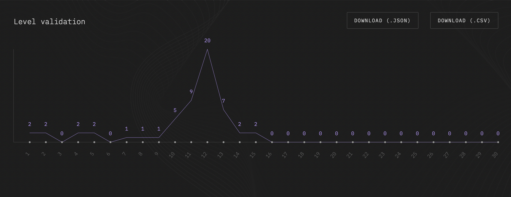
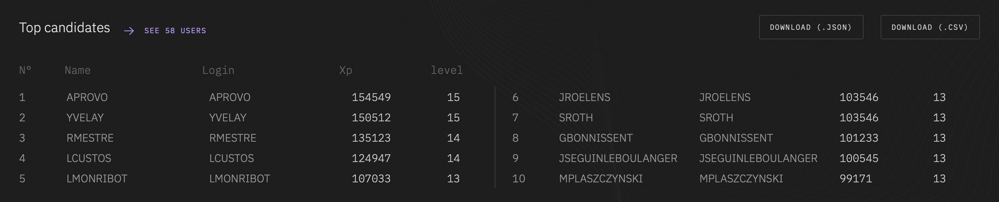

Le role de mentor
Avant de vous citez quelque exemples de mes missions en temps que mentor junior au sein de Toulouse Ynov Campus, je vais vous expliqué ce qu’est qu’un mentor au sens large.
Pour moi un mentor est une personne que l’on peut connaitre en personne ou non, qui a de l’avance sur le chemin que je veux suivre. Le mentor doit avoir une capactité a transmettre ces connaissances et son experience. Car il a réalisé ce que voulez être.
Il n’est pas necessaire que votre mentor soit une personne à qui vous pouvez ressembler en tout point. Il suffit juste qu’il possede la compétence que vous voulez developper et la capacité à la transmettre.
Le mentor est donc la pour vous éclairer, vous guider sur le chemin jusqu’a l’accomplissement de votre objectif. Il vous fait profiter de son experience mais aussi de son réseau. Le but étant de vous faire avancé plus vite vers vos objectifs.
Un bon mentor est selon moi quelqu’un qui souhaite révéler votre potentiel et voir ce qu’il peut faire pour vous.
Et à Ynov comment cela se passe ?
Lors de mon stage en temps que Mentor Junior au sein de Toulouse Ynov Campus, je travaillé en rythme de demi-journée. Je me rendez en cours le matin de 8h30 à 12h30 et je prennais mon role de Mentor Junior de 13h30 à 17h30 sous la supervision d’Antoine Roques.
Ce presente aux Mentor trois cas de figures :
- Les premieres années ( B1 ) sont en cours avec un intervenant
- Les premières années sont en module Ytrack ou en Projet que nous supervisons
- Developpement d’outils pour ameliorer le suivis des etudiants
Quand les premieres années sont en cours avec un intervenant, qu’est ce que je peux faire en temps que Mentor pour les aider ?
Dans un premier temps je m’informe sur leur avancement des piscines en cours :

Je regarde aussi le details de chacun pour vérifié que chacun avance et que personne ne prenne de retard sur les exercices. Cela m’apportera plus de précisions pour savoir vers quel etudiant je peux apporté mon aide ou envers lequel je dois rester attentif.

Une fois ce suivis fait, je me penche sur les supports de cours que je pourrais faire pour les aider dans l’avencement de leur projet ou sur des technologies non étudié pour éveillé leur curiosité.
Vous pourrez avoir plus de précision quand au développement de capsule de cours dans un autre article.
Les étudiants sont avec les Mentors en Piscine ou en Projet, quel est mon role ?
Lorsque les étudiants sont en Piscine Golang ou JavaScript par exemple, ou encore en Projet, certain rencontre des difficultés car ils doivent mettre en application des conceptes qui leur est la plupart du temps inconnues. C’est la tout l’intéré de la pédagogie inversé. On rentrera en details de la pédagogie inversé dans un article précis.
Lors ce qu’un étudiant rencontre une difficulté, il vient voir un des mentors présent avec lui et expose son problème. Notre rôle premier est de prendre du recul sur ce probleme et de l’identifié avec l’étudiant, le but étant que l’étudiant trouve le probleme tout seul. En informatique on dit que le principal de notre temps est concacré à resoudre les problemes de notre propre code. Il est de notre role de developper cette compétence chez l’etudiant.
La plupart du temps l’etudiant identifie tout seul son erreur. Mais dans certains cas l’erreur est plus complexe, on se penche alors en details sur le code de l’étudiants pour lui apprendre a debuguer avec lui, on introduit aussi les bonnes pratiques sur le nomage des fichiers et organisation du code.
Developpement d’outils pour ameliorer le suivis des etudiants
Sur l’année scolaire 2021-2022 c’etait l’année de creation des mentors Junior au sein de Toulouse Ynov Campus. Des besoins en outils se sont fait ressentir au fil de l’année et on était développé. Voir article dédié.